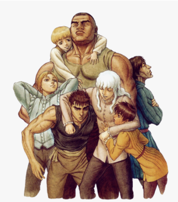

Berserk explores a wide range of themes and topics. Free will and destiny are discussed within the series. Human resilience is a recurring theme, with many characters coming from horrible backgrounds, constantly struggling against an unjust world. Guts struggles with destiny itself, and is constantly resisting the pull of predetermination. Griffith also embodies this idea of resilience, by chasing his dream of ruling his own kingdom, despite his lowborn origins, as well the free will, by his own decision to sacrifice the Band of the Hawk in order to achieve his dream.
The series also explores human nature and morality, as characters struggle between becoming good human beings or falling into madness and evil. Guts, at the beginning of the story, is presented as an antihero who does not care about killing, and is indifferent to people who aid him. Guts does not act in accordance with definitions of right and wrong, he operates within a gray area, and does not attempt to be heroic or protect the innocent. However, as the story progresses, it is shown that he is in fact a person who is deeply conflicted internally. His tragic and traumatic past, unfolded in the "Golden Age arc", proves that Guts is a much more complex character. Anne Lauenroth of Anime News Network, wrote that Griffith is "not evil at all", but "arrogant and brutally realistic about human nature". The suppression of his own human nature would initiate his demise as the Hawk and the rise of Femto.
Friendship, comradery and human relations are other explored themes. As a child, Guts tried to build some level of friendship with his mercenary group, but due to his traumatic experience with them, he lost trust in people. Through the time he was with Griffith and the rest of the Band of the Hawk, Guts formed bonds, friendships, animosities, and co-dependencies, maturing as well as individual. Miura has stated he based the Band of the Hawk on his own high school friend relationship experience. Jacob Chapman of Anime News Network, wrote that through their friendship, Gut's ambitions were elevated and Griffith's were lowered, allowing both of them to consider a new future for the first time, one where they fight side-by-side as equals and die on the battlefield, but they reject this future out of their own personal fears, as Guts did not think he was "good enough" for a happy future and Griffith was terrified of his lofty dream crumbling into something more mundane. Miura has also stated that the story of fight between Guts and Griffith speaks about their change after having built their personalities.
The Golden Age arc has been compared to a Greek tragedy. According to Lauenroth, Griffith's hamartia lies in how he compartmentalizes his feelings of guilt and shame that would get in the way of his dream, and how he deals to repress them. His inner dialogue in his second duel with Guts; "If I can't have him, I don't care", marks the Golden Age arc peripeteia. When Guts comes running to rescue him, Griffith reaches his moment of anagnorisis, with his thought: "You're the only one... who made me forget my dream", initiating thus the Eclipse.
Betrayal and revenge are major themes in the series. Guts suffered his first betrayal when Gambino sold Guts' body to another soldier for a few coins. He would eventually take revenge against the soldier, killing him on the battlefield and he later would kill Gambino as well. Guts is in a quest for revenge after his comrades were betrayed by Griffith and sacrificed by the God Hand. This desire for vengeance has been his main reason of survival.
Religion has been also touched in the series, mainly through the characters of Mozgus and Farnese. Miura has stated that he created Mozgus based on the concept of rigid personality to create a fanatic religious character with no flexibility. Farnese is presented as the figurehead of the Holy Iron Chain Knights, inquisitors tasked with burning heretics and witches at the stake. After her encounter with Guts, she finds it increasingly difficult to resolve her faith with the atrocities she has become party to, as Guts, inversely, takes action against something he disagrees with. Guts denounces the very idea of prayer, claiming that the act of clasping hands only prevents people from realizing what they desire through their own means. After the battle between Guts and Mozgus, Farnese rejects her faith, as she realizes how blind she obeyed the rigidity of her beliefs.